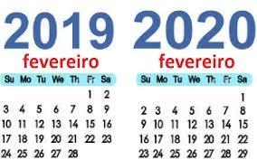

Ano Bisexto |
| Fluxograma | Algorithmi |
|---|---|
begin MainProgram
read integer ano "Ano \t: "
if ano % 400 == 0 then
write "Bisexto"
else
if ano % 4 == 0 && ano % 100 != 0 then
write "Bisexto"
else
write "Comum"
end if
end if
end MainProgram
|
| Input | Output |
|---|---|